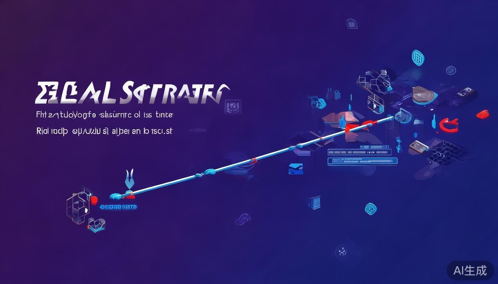

2026年中AI创业观察：别追大模型热点，赚确定的钱才是活下去的核心
2026年8月24日，我翻完了过去3个月接触的27个AI创业项目的跟进记录：11个已经停摆，其中8个死在“要做通用Agent、要对标GPT-6”的宏大叙事里；剩下16个活下来的项目，没有一个的ARR（年度经常性收入）低于300万，最高的一个做制造业质检垂类模型的团队，12个人已经做到了4200万ARR，账上现金够烧30个月。今天不聊AGI的未来，只聊当下AI创业真能赚到钱的真实逻辑，全是踩过坑的实感。
第一个铁律：别碰通用赛道，垂类“小切口+高付费意愿”才是安全区
我今年见过最离谱的创业项目，是3个从大厂算法岗出来的年轻人，凑了200万启动资金要做“人人能用的个人生活Agent”，能帮你管日程、订机票、陪聊、做职业规划，结果做了6个月，DAU最高冲到1.2万，付费转化率不到0.3%，上个月团队已经解散。核心问题根本不是技术不够好，是他们选的赛道，本质是巨头的免费流量池，根本没有创业公司的生存空间。
现在真正能跑通的垂类切口，全部满足两个标准：第一，客户本来就愿意为这个场景的解决方案付高价，不用你教育市场；第二，场景的数据壁垒足够高，通用大模型拿不到精准的行业Know-how，根本做不好。
- 比如给县域农商行做智能信贷审批辅助的团队，对接本地10年以上的农户信贷、小微企业经营数据，把坏账率识别准确率比通用模型高47%，单客户年服务费20-50万，现在已经签了17家银行，没有任何销售费用，全是客户转介绍。
- 比如给连锁餐饮做食安巡检AI的团队，把后厨监控、食材溯源台账、员工操作规范的数据全部打通，能自动识别未戴厨师帽、食材过期、操作区抽烟等23类违规，单店年服务费1200元，覆盖了8000多家门店，复购率92%。
别觉得垂类赛道小，中国有400多个地级市、上千个细分实体行业，任何一个你能吃透的垂直场景，都能撑起一家年利润千万级的公司，比你烧钱做通用产品追热点靠谱100倍。
成本红线：模型调用成本占比必须压到15%以下，否则赚的都是给云厂商打工的钱

去年我接触过一个做AI法律文书生成的团队，当时用GPT-4o做底层，单客月费29元，算下来每生成一份答辩状的模型调用成本就有17元，用户平均每个月用3次，单客月成本就超过50元，卖一单亏一单，最高峰的时候每个月亏120万，差点倒闭。今年年初他们花了3个月时间，用开源的Qwen-7B、Llama 3.1微调了自己的法律垂类小模型，把单份文书的生成成本压到了0.12元，现在模型调用成本只占营收的8.7%，这个月已经实现单月盈利。
这里给所有AI创业者算一笔真实的账：现在的SaaS类项目，健康的成本结构应该是：研发人力占30%，销售及市场费用占25%，云服务+模型调用成本占15%以内，管理及其他成本占10%，剩下20%左右的净利润空间。如果你的模型调用成本占比超过25%，不管你营收做多高，本质都是在给大模型厂商和云服务商打工，一旦流量波动或者模型涨价，你立刻就会现金流断裂。
现在降本的可操作路径非常明确，根本不需要你自己从零训模型：
- 高频、标准化的场景任务，直接用7B-14B参数量的开源模型做领域微调，配合本地部署，成本能比调用闭源API低90%以上，现在单张A10卡就能跑流畅的7B模型推理，硬件成本已经降到了创业公司完全能承担的水平。
- 复杂、低频次的任务，采用“小模型路由+大模型兜底”的架构，90%的常规请求用本地小模型处理，剩下10%的复杂请求再调用闭源大模型，能把综合调用成本压到原来的20%以内。
- 不要迷信最新的大模型版本，很多场景下，经过微调的旧版本开源模型效果比最新的通用闭源模型还好，成本却只有几十分之一。
销售逻辑：别迷信PLG（产品驱动增长），To B项目的第一笔100万营收必须靠创始人自己谈
很多从互联网大厂出来的AI创业者，有一个非常致命的思维误区：觉得只要产品做的足够好，用户会自动上门，靠免费试用、内容营销就能把规模做起来。但现实是，2026年的AI To B市场，客户已经被各种概念轰炸了3年，对“AI提升效率”的话术已经完全免疫，没有信任关系，你就算把产品免费给客户用，客户都嫌部署麻烦。
我认识的一个做工业设备预测性维护AI的创始人，之前是华为的工业解决方案专家，创业前6个月没有招一个销售，自己带着技术跑了26家制造工厂，在车间里蹲点跟设备 maintenance 班组聊需求，免费给3家工厂做了试点，把设备非计划停机时间降低了32%，靠这3个标杆案例，后面3个月就签了11个客户，拿到了第一笔270万的营收，现在销售团队也只有3个人，全部是有工业行业资源的老销售，人效比纯互联网背景的销售团队高8倍。
这里给AI创业团队的销售节奏提三个可落地的标准：
- 0到100万营收阶段：创始人必须是头号销售，不要招所谓的“资深销售总监”，你自己对产品的理解、对客户痛点的感知，是任何销售都比不了的，这个阶段的核心目标不是赚多少钱，是跑通3个可复制的标杆案例，拿到客户的真实反馈迭代产品。
- 100万到1000万营收阶段：不要铺大规模的电话销售团队，重点招有对应行业资源的“关系型销售”，每个销售一年能给你带来3-5个大客户就足够，人效要保证在年贡献营收100万以上，低于这个人效的销售立刻淘汰。
- 1000万以上营收阶段：再考虑搭建标准化的销售体系和渠道合作网络，这个阶段你的产品已经经过市场验证，案例足够多，标准化交付能力也起来了，扩张才不会踩坑。
避坑提醒：这三个坑2026年绝对不能碰
最近半年我见过太多踩坑的团队，总结下来三个最高发的死亡陷阱，只要避开，你活过2年的概率能提升80%：
第一个坑，不要拿对赌协议的融资。现在很多一级市场的投资方给AI创业团队的TS都带业绩对赌，要求12个月内营收做到多少、用户量做到多少，做不到就要回购股份。现在的市场环境变化极快，大模型半年就迭代一次，一旦你为了对赌冲规模、做不符合客户真实需求的功能，很快就会把现金流耗光，最后背上巨额债务。我见过的拿了带对赌融资的AI团队，70%都在对赌期结束前死掉了。
第二个坑，不要做“伪需求”的C端AI产品。什么AI算命、AI陪伴、AI换装这类项目，看起来用户量涨的快，但是付费意愿极低，留存率不到10%，最后要么靠灰产变现，要么直接倒闭。C端AI现在唯一的机会是强工具属性、用户付费意愿已经被验证的场景，比如AI设计、AI剪辑这类，但是这些赛道已经有头部玩家，创业公司的机会其实非常小，没有核心差异化就不要轻易进场。
第三个坑，不要盲目囤GPU。很多创业者觉得GPU是硬通货，一上来就花几百万买A100、H800，结果业务量根本跑不满，GPU利用率不到20%，钱全部变成了躺在机房里的固定资产，现金流一下就紧张了。创业初期，算力优先用云实例按需付费，等你业务稳定了、算力需求每个月都能跑满70%以上，再考虑采购自有硬件，这才是稳妥的选择。
最后给今天想启动AI创业的朋友三个行动建议
第一，这周就找3个你在传统行业认识的朋友，不管是开工厂的、做餐饮的、做银行的、做零售的，别聊AI概念，就问他们现在日常经营里最痛的、愿意花钱解决的3个问题是什么，记下来，这里面就藏着你创业的真实机会，比你在网上看100篇行业报告有用。
第二，如果你已经在做AI项目，今天下班前算一笔账：你每个月的模型调用成本占总营收的比例是多少，如果超过20%，立刻安排技术团队做模型微调、小模型路由的降本方案，这是最快能提升你利润空间、延长现金流的事。
第三，接下来3个月，不要追任何新出的大模型概念、Agent热点，把你80%的精力放在老客户的留存和复购上，2026年的AI创业，活下来比什么都重要，能稳定赚钱的小公司，比烧钱追热点的“明星公司”走的远的多。
出处声明：本页内容为白驹全局大脑原创，或已标注引用来源；改编内容遵循原始项目许可证（如 MIT / CC），不侵犯原作者权益。若引用内容涉及版权问题，请联系我们更正。